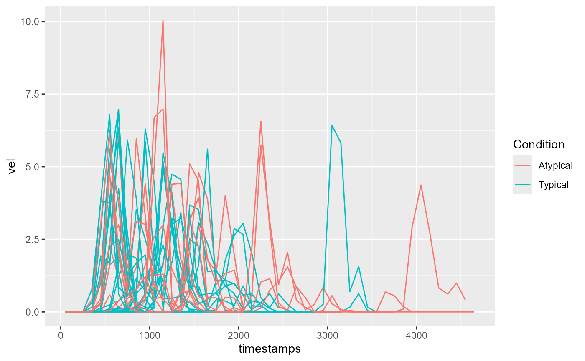
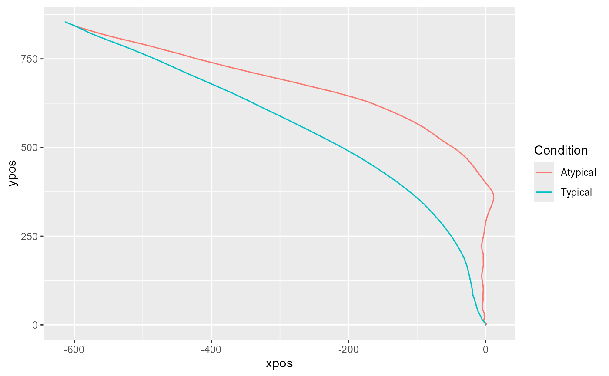

Plot trajectory data.
mt_plot can be used for plotting a number of individual trajectories.
mt_plot_aggregate can be used for plotting aggregated trajectories.
The color and linetype can be varied depending on a set of condition
variables using the color and linetype arguments. If the
x and y arguments are varied, this function can also be used
for plotting velocity and acceleration profiles.
mt_plot(data, use = "trajectories", use2 = "data", x = "xpos", y = "ypos", color = NULL, linetype = NULL, points = FALSE, only_ggplot = FALSE, mt_id = "mt_id", ...) mt_plot_aggregate(data, use = "trajectories", use2 = "data", x = "xpos", y = "ypos", color = NULL, linetype = NULL, points = FALSE, only_ggplot = FALSE, subject_id = NULL, ...)
Arguments
- data
- a mousetrap data object created using one of the mt_import functions (e.g., mt_import_mousetrap).
- use
- a character string specifying which trajectories should be
plotted. The corresponding trajectories are selected from data using
data[[use]]. Usually, this value corresponds to either "trajectories", "tn_trajectories" or "av_trajectories", depending on whether the raw, time-normalized or averaged trajectories should be plotted. - use2
- a character string specifying where the data that contain the
variables used for determining the
colorandlinetypecan be found (in case these arguments are specified). Defaults to "data" asdata[["data"]]usually contains all non mouse-tracking trial data. - x
- a character string specifying which dimension in the trajectory array should be displayed on the x-axis (defaults to xpos).
- y
- a character string specifying which dimension in the trajectory array should be displayed on the y-axis (defaults to ypos).
- color
- an optional character string specifying which variable in
data[[use2]]should be used for coloring the trajectories. - linetype
- an optional character string specifying which variable in
data[[use2]]should be used for varying the linetype of the trajectories. - points
- logical. If
TRUE, points will be added to the plot using geom_point. - only_ggplot
- logical. If
TRUE, only the ggplot object without geoms is returned. IfFALSE(the default), the trajectories are plotted using geom_path. - mt_id
- a character string specifying the internal label used for the
trial identifier (passed on to the group aesthetic). Only relevant for
mt_plot. - ...
- additional arguments passed on to mt_reshape (such as
subset). - subject_id
- a character string specifying which column contains the
subject identifier. Only relevant for
mt_plot_aggregate. If specified, aggregation will be performed within subjects first. Note that aggregation will be performed separately for each level, including all subjects for whom data are available.
Details
mt_plot internally uses mt_reshape for reshaping trajectories
into a long format. Next, it creates a ggplot object using the
ggplot function of the ggplot2 package. The
aes mappings are taken from the function arguments for x, y
etc.; in addition, the group mapping is set to the internal trial identifier
(by default called "mt_id"). If return_ggplot=FALSE, the trajectories
are plotted using the geom_path function of the
ggplot2 package.
mt_plot_aggregate works similarly, but uses mt_aggregate for
reshaping and aggregating trajectories prior to plotting.
Please note that this function is intended as a quick and easy solution for visualizing mouse trajectories. For additional flexibility, we recommend that mt_reshape or mt_aggregate be used in conjunction with ggplot to create custom visualizations.
Functions
-
mt_plot: Plot individual trajectory data -
mt_plot_aggregate: Plot aggregated trajectory data
See also
mt_plot_add_rect for adding rectangles representing the response buttons to the plot. mt_plot_riverbed for plotting the relative frequency of a selected variable across time.
mt_plot_per_trajectory for individually plotting all trajectories as individual pdf files.
Examples
# Load ggplot2 library(ggplot2) # Time-normalize trajectories mt_example <- mt_time_normalize(mt_example) # Plot all time-normalized trajectories # varying the color depending on the condition mt_plot(mt_example, use="tn_trajectories", x="xpos", y="ypos", color="Condition")# ... with custom colors mt_plot(mt_example, use="tn_trajectories", x="xpos", y="ypos", color="Condition") + ggplot2::scale_color_brewer(type="qual")# Plot aggregated time-normalized trajectories per condition mt_plot_aggregate(mt_example, use="tn_trajectories", x="xpos", y="ypos", color="Condition")# ... first aggregating trajectories within subjects mt_plot_aggregate(mt_example, use="tn_trajectories", x="xpos", y="ypos", color="Condition", subject_id="subject_nr")# ... adding points for each position to the plot mt_plot_aggregate(mt_example, use="tn_trajectories", x="xpos", y="ypos", color="Condition", points=TRUE)# Plot velocity profiles based on the averaged trajectories # varying the color depending on the condition mt_example <- mt_derivatives(mt_example) mt_example <- mt_average(mt_example, interval_size = 100) mt_plot(mt_example, use="av_trajectories", x="timestamps", y="vel", color="Condition")# Use only_ggplot option to return a ggplot object without geoms mt_avg_plot <- mt_plot_aggregate(mt_example, use="tn_trajectories", x="xpos", y="ypos", color="Condition", only_ggplot=TRUE) # ... and add a geom to it with a custom line width mt_avg_plot + geom_path(size=1.5)